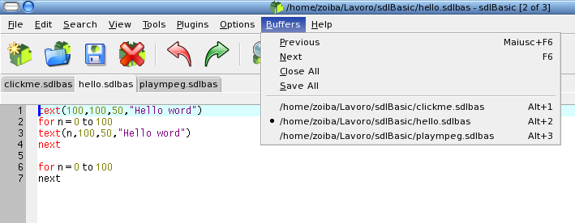

Buffers
sdlBasicではプロジェクトファイル用にバッファーを50個まで使うことが出来ます。 単にタブをクリックすればそのバッファーに移れます。多くのファイルを開いている 場合の選択にはバッファーメニューで名前を選択するか、またはプリビアス(F6)、 ネクスト(Shift+F6)コマンドを使用してください。

バッファーが一杯になった場合、新たにファイルをオープンするため、 古いバッファーが、再使用されます。 この場合もファイル保存の確認のためのアラートが表示されます。